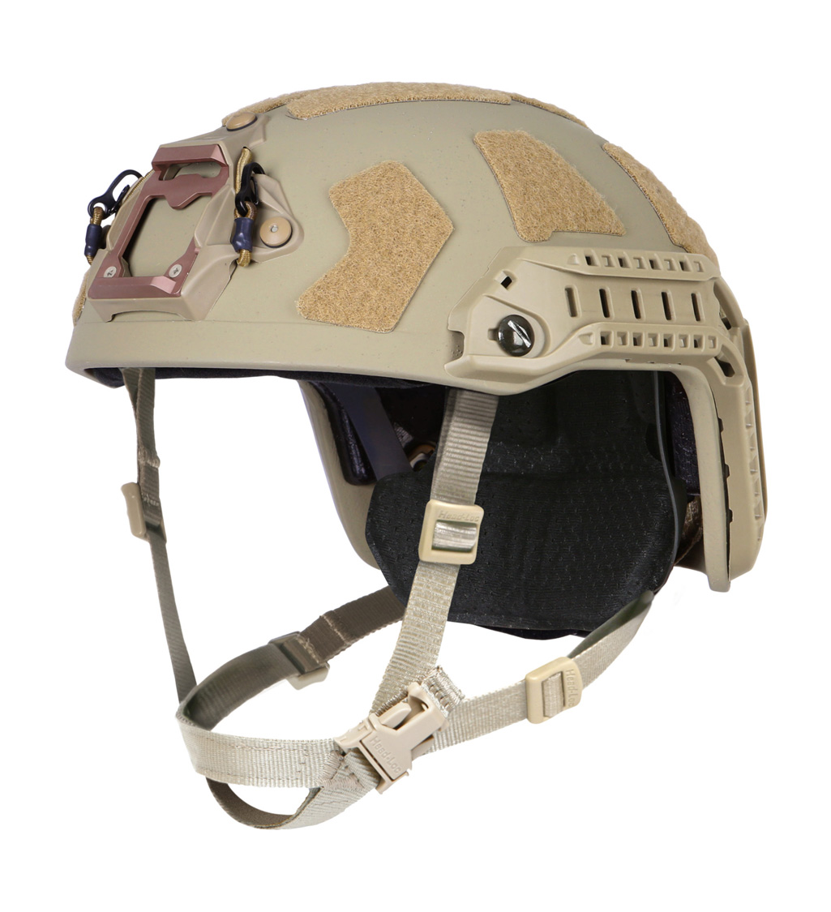
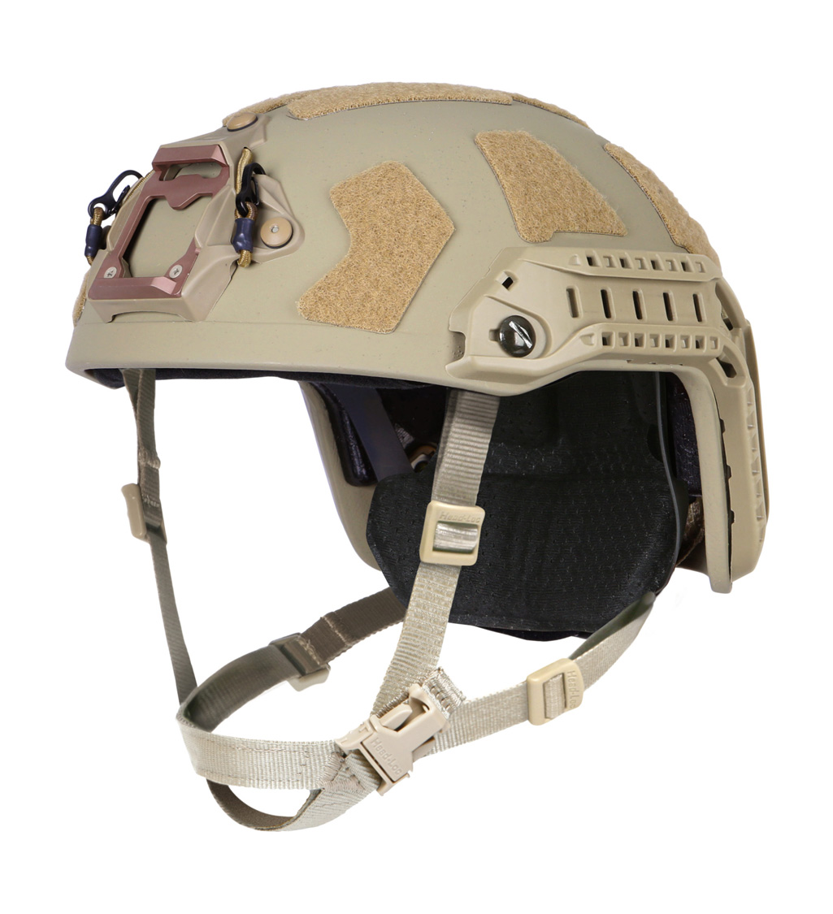
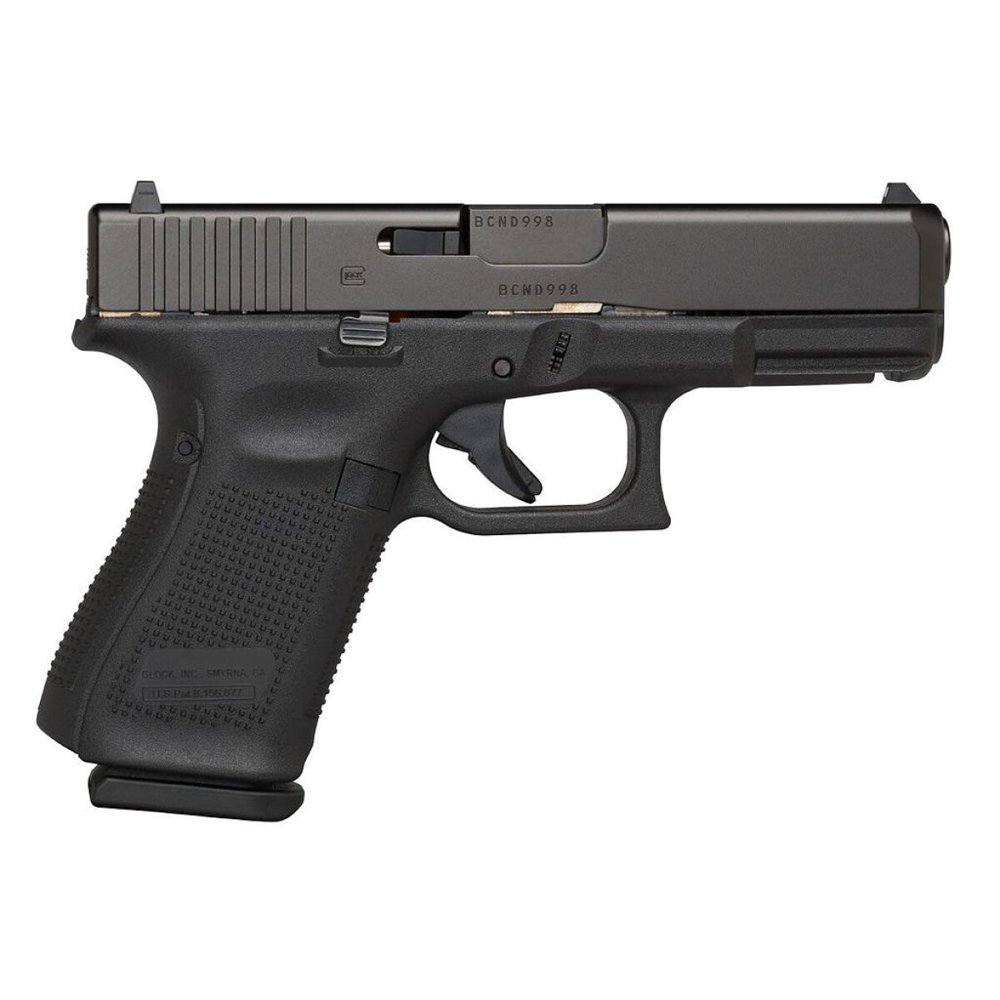
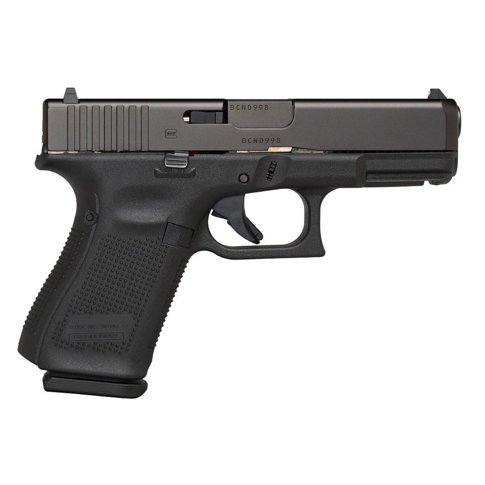
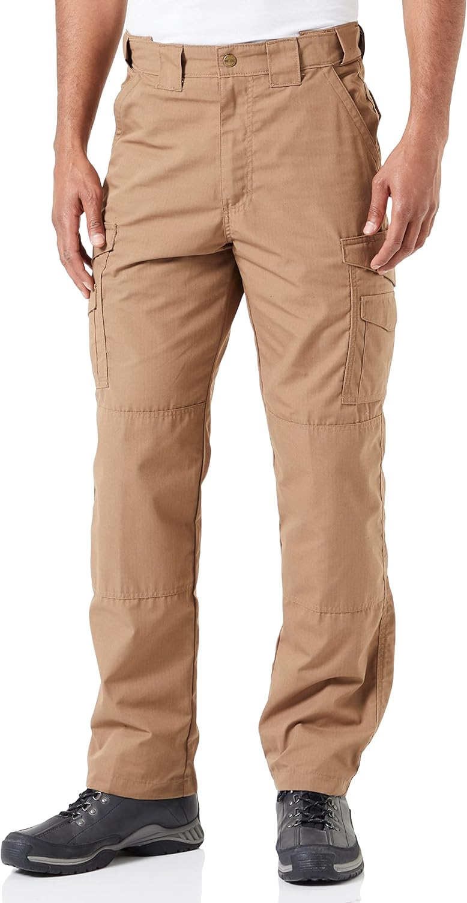
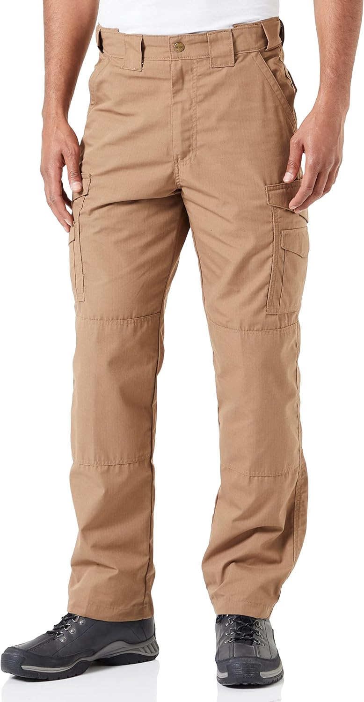
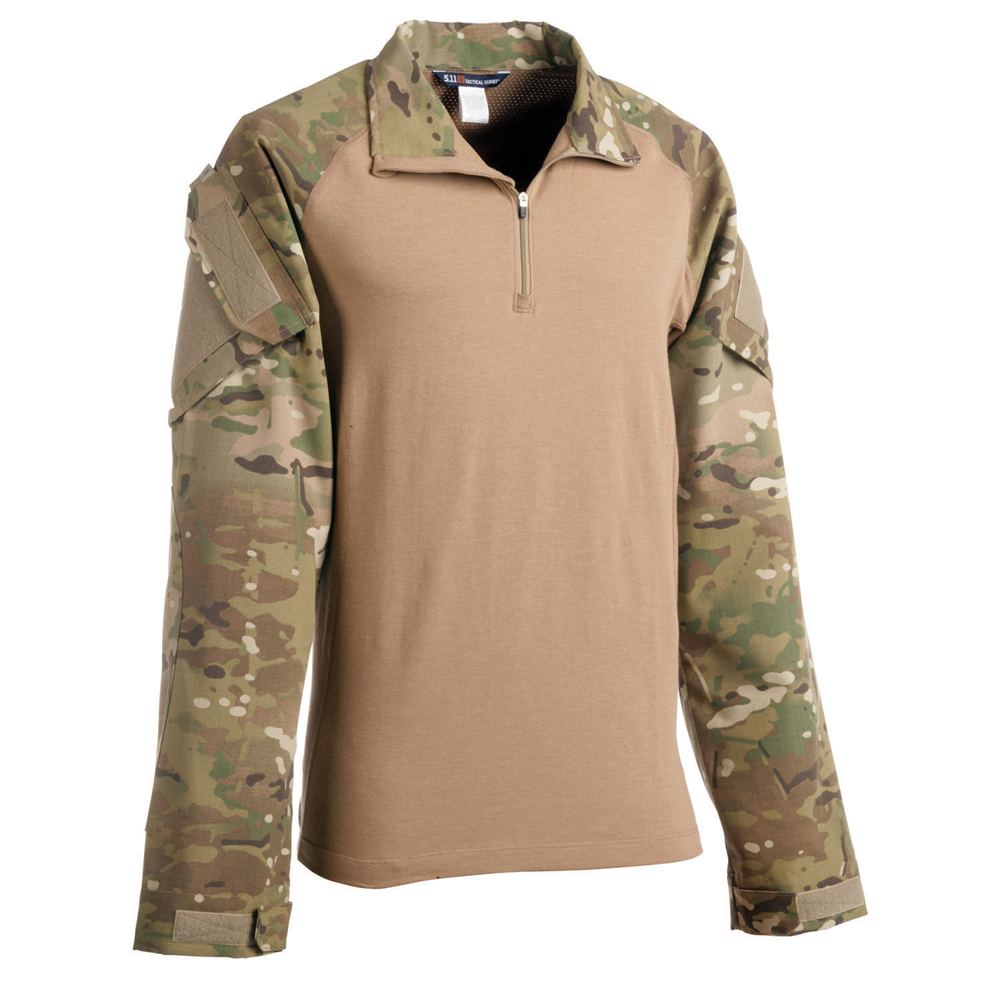
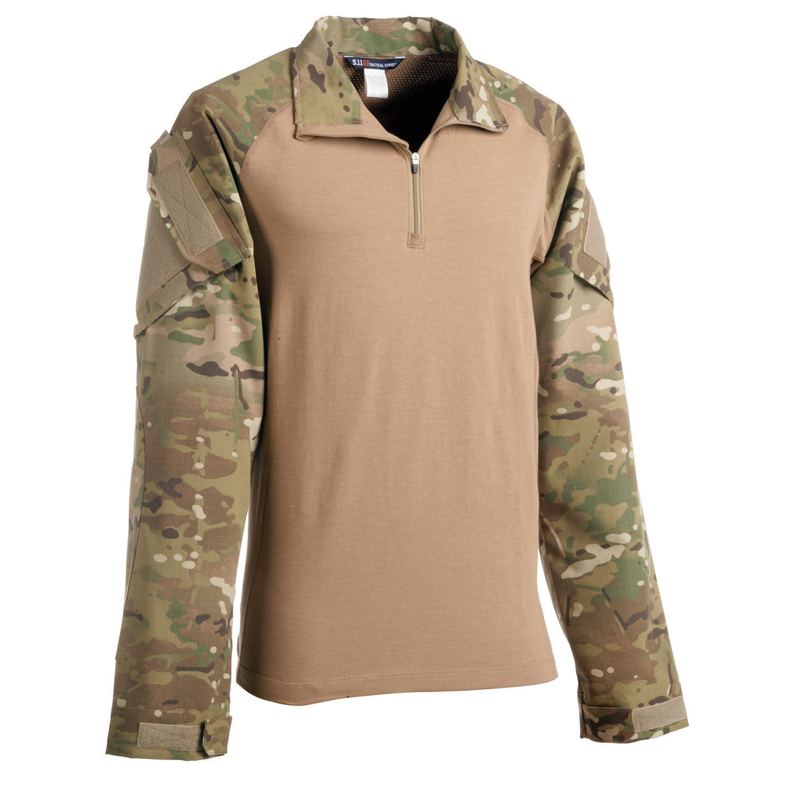

Estas botas son conocidas por su ligereza y transpirabilidad. Cuentan con una suela exterior de goma antideslizante y una estructura de microfibra y nylon para mayor durabilidad.
Nuestro objetivo principal es proporcionar a nuestros clientes acceso a equipamiento militar de alta calidad y confiable, satisfaciendo sus necesidades y brindando un servicio excepcional.
Nuestra misión es proveer a nuestros clientes con equipamiento militar de alta calidad, garantizando la seguridad, confiabilidad y eficiencia en cada producto que vendemos. Nos comprometemos a brindar un servicio excepcional, asesoramiento experto y una experiencia de compra satisfactoria para nuestros clientes. Trabajamos de manera ética y transparente, cumpliendo con todas las regulaciones y normativas aplicables en el ámbito de la venta de equipamiento militar.
Nuestra visión es convertirnos en la plataforma líder en la venta de equipamiento militar, ofreciendo una amplia gama de productos de primera calidad y estableciendo una reputación sólida como el proveedor confiable y preferido por nuestros clientes.
Estas botas son conocidas por su ligereza y transpirabilidad. Cuentan con una suela exterior de goma antideslizante y una estructura de microfibra y nylon para mayor durabilidad.


Nuestros Fusiles son conocido por su diseño compacto y su capacidad para disparar ráfagas automáticas. Su tamaño reducido y su peso ligero lo hacen adecuado para su uso en espacios reducidos y en situaciones de combate cercano. Además, su cargador de alta capacidad permite una mayor cantidad de disparos antes de tener que recargar.
 

Cascos Tacticos fabricados con materiales resistentes y duraderos, el casco táctico ofrece una excelente protección contra impactos y fragmentos de proyectiles. Su diseño robusto y ergonómico se adapta cómodamente a la cabeza del usuario, brindando una sensación de seguridad y confianza.
 

Las Glock cuenta con un armazón de polímero resistente y duradero, lo que la hace ligera y fácil de manejar. Su diseño ergonómico se adapta cómodamente a la mano del usuario, brindando un agarre seguro y una sensación de confianza durante su uso.

Nuestros chalecos táctico militar es la elección perfecta para aquellos que buscan una solución completa para sus necesidades tácticas. Diseñado con los más altos estándares de calidad y funcionalidad, este chaleco proporciona la máxima protección y comodidad en cualquier situación.
 

Los pantalones tacticos La cintura ajustable y las trabillas reforzadas permiten un ajuste personalizado y la posibilidad de utilizar un cinturón táctico para mayor comodidad y estabilidad. Además, la tela resistente al agua y a las manchas asegura que el pantalón se mantenga limpio y seco en condiciones adversas.
 

Nuestro suéter táctico militar es la elección perfecta para aquellos que buscan una prenda versátil y resistente. Diseñado con los más altos estándares de calidad, este suéter está confeccionado con materiales duraderos que garantizan su resistencia y comodidad en cualquier situación.